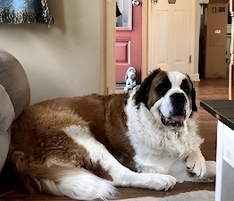

I have two dogs, one is named Sully and the other is Otis. These dogs have been in my life for a long time and I love them. Sully is a giant saint bernard and Otis is a basset hound. Both of them are super friendly, but will constantly beg for your attention.
Both Sully and Otis are very lazy dogs. Normally, you can find both of them sleeping on the couch or the floor. Even though they are lazy, they still love to be around people and will follow you inside and out. There were many times this summer that I went in my pool and they would follow me out and just sunbathe on my deck.
Fun Facts:
| Dog | Weight | Age |
|---|---|---|
| Sully | 175-200 lbs | 8 years old |
| Otis | 60 lbs | 6 years old |